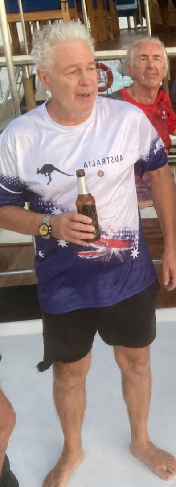

Craig "Polly" O'Brien

A Huge Thank You
A Huge Thank You to Craig "Polly" O'Brien
Craig "Polly" O'Brien attended our ANZAC Day event at the Surf Club and later made an incredibly generous donation of a surf rescue board for the children.
Polly's own children grew up participating in surf lifesaving in Australia, so he strongly believes in the importance of teaching local Samui children essential ocean-safety and surf-rescue skills.
Thank you, Polly. Your generosity is greatly appreciated, and your donation will help our young swimmers build confidence, learn valuable skills and stay safer in the ocean.